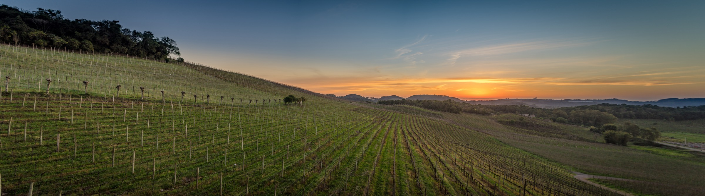

Teaching


Oficina · SEMAT 2026 · 26 October 2026
Formalização e o futuro da matemática: uma introdução ao Lean
Teaching record
Courses
- 2025 · 2nd semester
Measure and Integration
Medida e Integração · IMPA · Main instructor · Master’s programme
- 2025 · 1st semester
Complex Analysis
Análise Complexa · IMPA · Main instructor · Master’s programme
- 2024 · 2nd semester
Analysis I
ETH Zürich · Course coordinator
- 2024 · 1st semester
Analysis II
ETH Zürich · Course coordinator
- 2023 · 2nd semester
Additive Combinatorics
ETH Zürich · Course coordinator & teaching assistant
- 2022 · 2nd semester
Complex Analysis
ETH Zürich · Course coordinator & teaching assistant